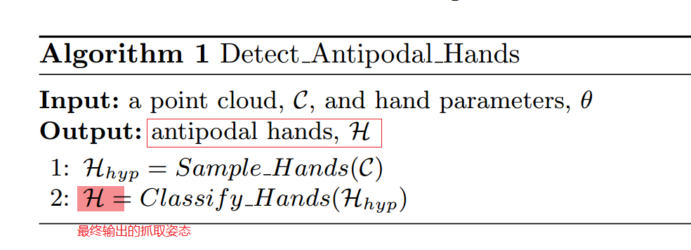
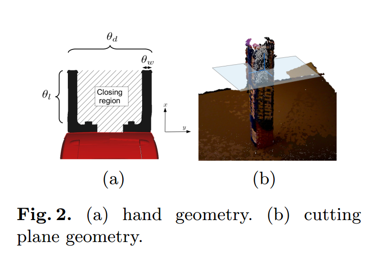
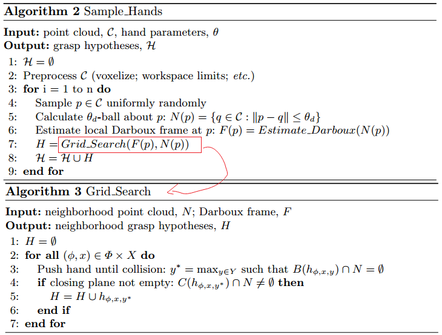
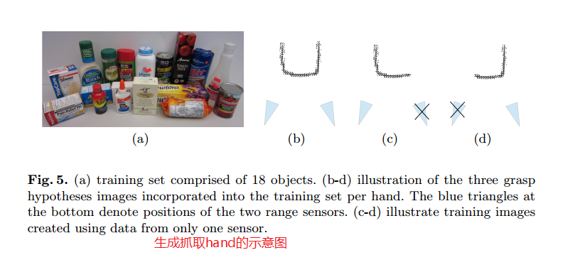
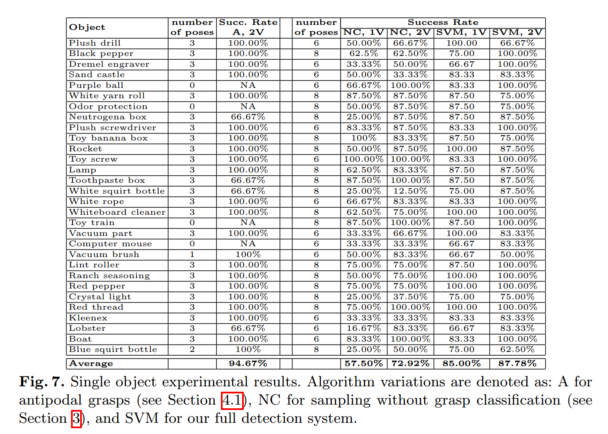

Using Geometry to Detect Grasp Poses in 3D Point Clouds¶
- 2015 美国东北大学 计算机信息科学学院 Boston，Massachusetts，USA
- 该实验室(Helping Hands Lab)又发表了几篇抓取的论文，作者Andreas ten Pas的个人网站
1）摘要¶
-
论文提出了机器学习方法在杂乱场景中检测新物体的抓取位姿，算法的输入是物体的点云和机器人的几何参数，算法的输出是一系列的可以实现抓取的位姿。
-
贡献点：
（1）对一个抓取位姿定义了一系列的必要的几何限定条件 (geometric grasp conditions) ，这些限定条件可用于生成一系列的候选抓取位姿 (grasp hypotheses)，这使我们的关注点集中在可生成抓取位姿的区域。
（2）阐述了如何使用geometric grasp conditions用于生成用于训练机器学习算法的标记数据集。
（3）论文中提出的算法在单个物体场景下取得88%的平均成功率，在杂乱背景下取得73%的平均成功率。 3. 论文代码已经做成了ROS功能包，链接：http://wiki.ros.org/agile_grasp
2）Introduction¶
作者把机器人抓取分成两步，传统地分成perception和planning。Perception是估计被抓取对象的位置和姿态，之后才是规划路径和控制机器人实现抓取。难点就在于如何估计抓取对象的位姿。
研究者已经提出了多种抓取点检测方法。其中一类是从RGBD数据中使用滑窗法（sliding window）检测抓取区域，另一些方法采用人工定义的抓取位姿描述（grasp prototypes）
以上所说两种方法没有关注grasp geometry，点云数据可以帮助研究grasp geometry。本论文中算法通过预测当前场景下存在所需且足够的几何条件从而生成抓取位姿。
-
算法分成两步:
（1）生成大量的后候选抓取位姿（grasp hypothesis）。首先用几何信息减少采样区域，作者提出了一个采样方法生成grasp hypotheses, 同时满足机器手与抓取对像之间不发生碰撞和机械手抓必须覆盖在对像的表面。第二步算法使用几何信息自动地标记训练数据集。
（2）对生成的候选抓取位姿进行分类
实验显示论文中提出的算法在不使用机器学习算法的情况下抓取新对像可以获得73%的成功率。使用机器学习分类之后成功率上升到88%。 且论文提出的算法在非常杂乱的场景下仍可取得73%的平均成功率。
3）Related Work¶
抓取点识别方法，最开始在RGBD图像中使用sliding window识别抓取区域，之后研究者在这基础上扩展该方法实现抓取，并取得一定的抓取成功率。别的一些方法是基于点云数据（point cloud）或者RGB数据，不想仔细看了
4）Approach¶
- 定义1：Antipodoal:
- 定义2：Antipodoal Hand:二平行手指的姿态，姿态的接触点使二指闭合时力的方向沿着两接触点的连线上
算法的可表示为： 
5）采样抓取姿态Sampling Hands （生成hand hypotheses）¶
Geometry of the Hand and the Object Surface¶
机械手爪的参数通过参数向量\theta = (\theta_l, \theta_w, \theta_d, \theta_t)来描述，\theta_t表示手指的厚度，如何下图所示：

论文中定义好多公式看不懂，还引用了一些方法进行拟合
Hand Sample Set¶
生成一个数据集H，该数据集包含许多antipodal hands(h\in H), 首先要定义3个限制条件
- 机械手爪与点云之间没有碰撞
- 手爪闭合平面(hand closing plane)包含p: p\in C(h)
- 手爪的闭合平面和物体点云的切平面(cutting plane)平行
算法描述：需要用的时候再返回来仔细看

6）Classifying Hand Hypotheses¶
在步骤5）中生成了hand hypotheses，在这一步根据其是否为antipodal hand对它进行分类。最简单的方法是参考对像表面的点云数据来检测hand hypotheses是否满足姿态的接触点使二指闭合时力的方向沿着两接触点的连线上， 但是很多真实的点云数据只能看到对像的部分，按照4）定义2的要求来检测hand hypotheses，则很大部分不满足要求。为了解决这个问题，论文中将采用机器学习算法进行分类。
Labeling Grasp Hypotheses¶
许多抓取点检测算法需要大量人工标记好抓取点的数据集，这个工作需要很大的人力且不讨好，因为人很难确定在任一个场景下对机器人来说哪些点是最好的抓取点。Instead，论文中的算法根据4)定义2可从训练集图中自动生成标记。
- 定义3：定义了阈值条件k\in Nand\theta\in[0, pi/2],在条件内的hand hypotheses是near hypotheses
论文中的定义的符号太难懂
Feature Representation¶
为了训练SVM模型，需要用一个Feature Descriptor来描述Hand的特征，论文中选择使用HOG特征描述子，具体的没看懂
Creating the training set¶
根据HOG特征生成训练集，也是分成了好几步，看图

7）Robot Experiment¶
- 使用的机器人：Baxter robot from Rethink Robotics
- 手爪：Baxter gripper，闭合时间距3cm，张开时间距7cm，也就是说该手爪只能抓取大小在3-7cm之间的物体。
- Computer：intel i7 3.5GHz with 16GB内存
- 深度传感器：Asus Xtion Pro range sensors
- 采样4000hand hypotheses，实现在线检测和选择最终执行的hand的过程需要2.7s；训练SVM模型需要5分钟
- 算法采用C++写的，只要有Baxter和合适的range sensor就可以复现论文中的内容，详情参考ROS功能包
Grasp Selection¶
当算法生成了几百上千个antipodal hand，最后需要选出最好的一个进行执行抓取任务，一种方式是选择最感兴趣的物体的hand，或者选择最好抓取的一个hand。
第一，根据distance和orientation把antipodal hand进行聚类。在每个新的group中计算类的均值和方向的均值作为新生成的hand
第二，根据机器人最容易的姿态，从新生成的hand中选择机器人觉得最舒适的抓取姿态所对应的hand
1 2 | (1)对每一个hand的位置先计算对应的机器人逆运动学，去掉无解所对应的hand. (2)剩下的hand根据3个标准再继续分等级：joint limit，hand joint limit, **没看懂** |
单个对像抓取实验¶
实验对比了在无SVM分类的情况下1只眼和2两只眼的trial成功率与在有SVM分类的情况下1只眼和2只眼trial成功率。

多个对像抓取实验¶
使用与抓取单个对像同样的算法（有SVM和2只眼），在杂乱的背景下可实现平均85%的成功率。